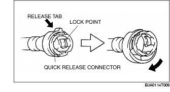
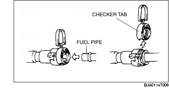
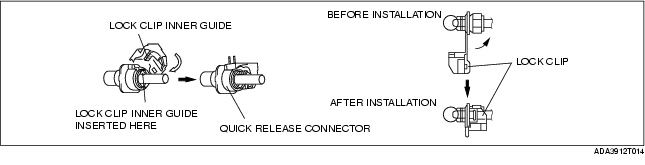

Quick release connector construction/operation [ZY]
• There are three types of quick release connectors.
Quick release connector locations

Type A, B
• Used on the fuel tank side of the charcoal canister and in the engine compartment.
• An SST is not used with this type.
• Mainly consists of a retainer and O-ring. The quick release connector is integrated with the fuel hose and therefore cannot be disassembled.
• When the quick release connector is connected, the fuel pipe projection is locked at the clamp lock point. By pushing the clamp release tab to expand the clamp, the lock point is released allowing the fuel pipe to be disconnected.

• To connect the quick release connector properly, push it into the fuel pipe until a locking click sound is heard.
• New quick release connectors are fitted with a checker tab that prevents improper fit. This checker tab cannot normally be removed. When the quick release connector is properly connected to the fuel pipe, the lock is released and the checker tab comes off. Due to this, it can be verified that the quick release connector is completely connected.

Type A
• The fuel pump quick release connector has adopted a shortened-type quick release connector allowing connection of a short fuel pipe. Connection of a short fuel pipe is possible by the shortening of length (A) from the quick release connector end to the lock point. Because the length (A) to the lock point is shortened, the checker tab is located on the fuel hose side. The disconnect/connect procedure is the same as that of the quick release connector on the fuel tank side except for the fuel pump.

Type B
• The quick release connector on the engine compartment side has a lock clip to prevent disconnection. After the quick release connector is connected, the quick release connector is protected from unexpected disconnection by the locking of the lock clip inner guide.

Type C
• An SST is used with this type.
• Mainly consists of a retainer and O-ring. The quick release connector is integrated with the fuel hose and therefore cannot be disassembled.
• When the SST is used, the fuel pipe can be disconnected by inserting the SST into the quick release connector and pulling it off at a level angle.

• To connect the quick release connector properly, push it into the fuel pipe until a locking click sound is heard
• New quick release connectors are fitted with a checker tab that prevents improper fit. This checker tab cannot normally be removed. When the quick release connector is properly connected to the fuel pipe, the lock is released and the checker tab comes off. Due to this, it can be verified that the quick release connector is completely connected.